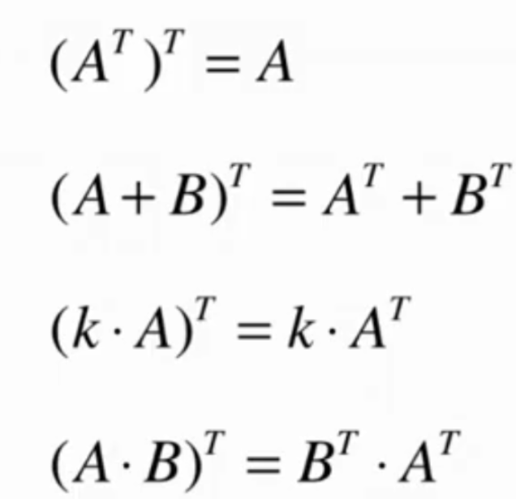
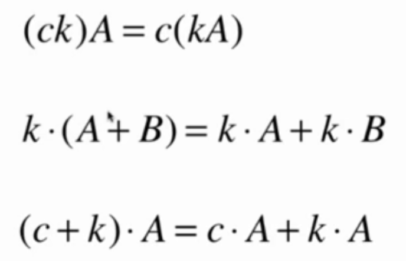
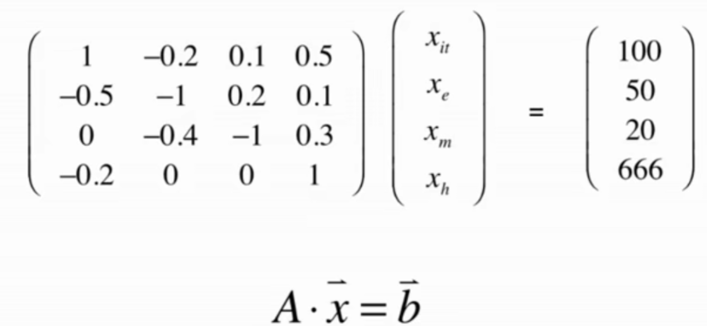
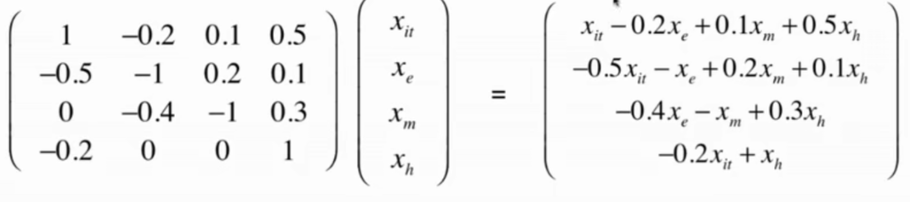
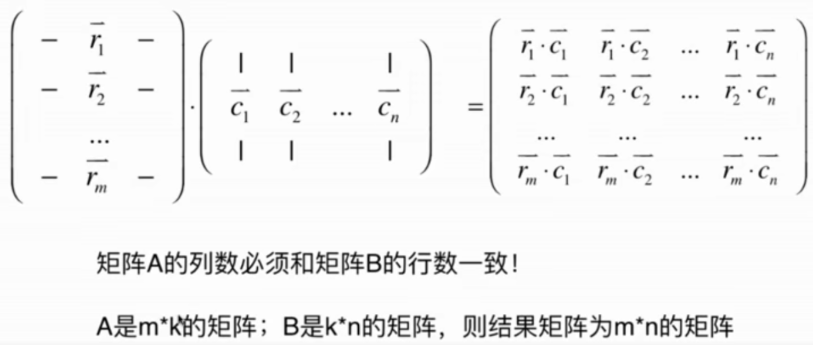
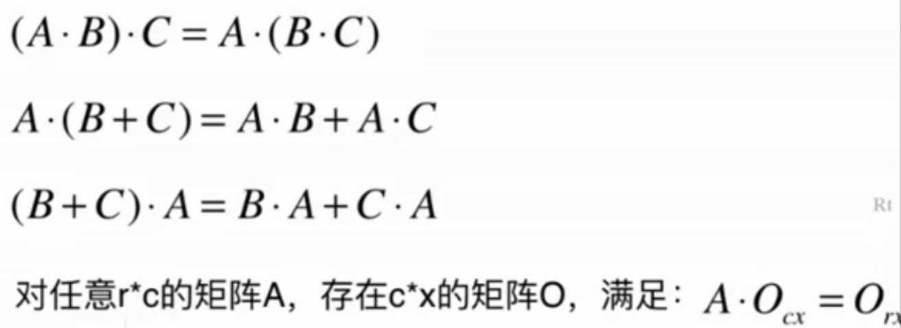
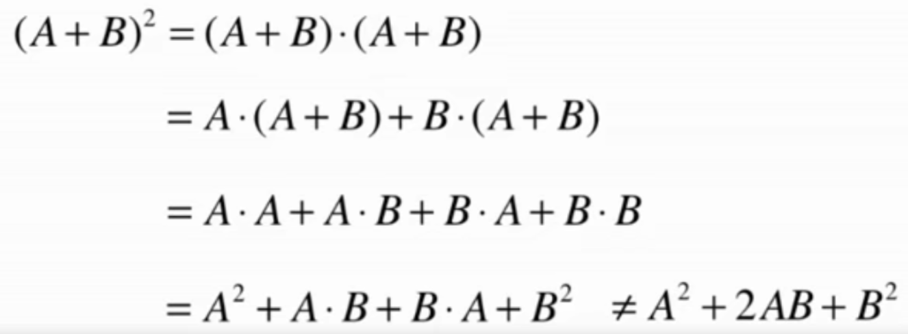

矩阵计算 链接到标题
矩阵定义 链接到标题
向量是对数的拓展，一个向量表示一组数。
而矩阵是对向量的拓展，一个矩阵表示一组向量。
行数与列数相等的矩阵称为方阵。
一个矩阵可以拆分为 n 个行向量或者 n 个列向量，称矩阵为 N x N 矩阵。
矩阵可以表示成一个系统，例如在经济系统中，对于 IT，电子，矿产，房产的投入，
可以表示成多个方程组，而方程组的系数则可用矩阵表示。
矩阵的转置 链接到标题
行变成列，列变成行。
矩阵转置的性质 链接到标题

矩阵的运算 链接到标题
矩阵的加法 链接到标题
每一个对应元素相加得到新矩阵
矩阵的数量乘法 链接到标题
标量去乘矩阵的每一个元素得到新矩阵
矩阵的基本运算性质 链接到标题
A + B = B + A
(A + B) + C = A + (B + C)
存在矩阵 O，满足：A + O = A
存在矩阵-A,满足：A + (-A) = O
-A 唯一, -A = -1 * A

矩阵和向量的乘法 链接到标题
矩阵的列数必须和向量的元素个数一致。 矩阵与向量点乘，实际上将向量 a 转换成了向量 b，所以矩阵可以理解为向量的函数。


矩阵和矩阵的乘法 链接到标题
矩阵 A 和矩阵 B 的每一个列向量相乘，要求矩阵 A 的列数必须和矩阵 B 的行数一致。
矩阵的乘法不遵守交换律。


矩阵的幂 链接到标题
只有方阵才有矩阵的幂。
